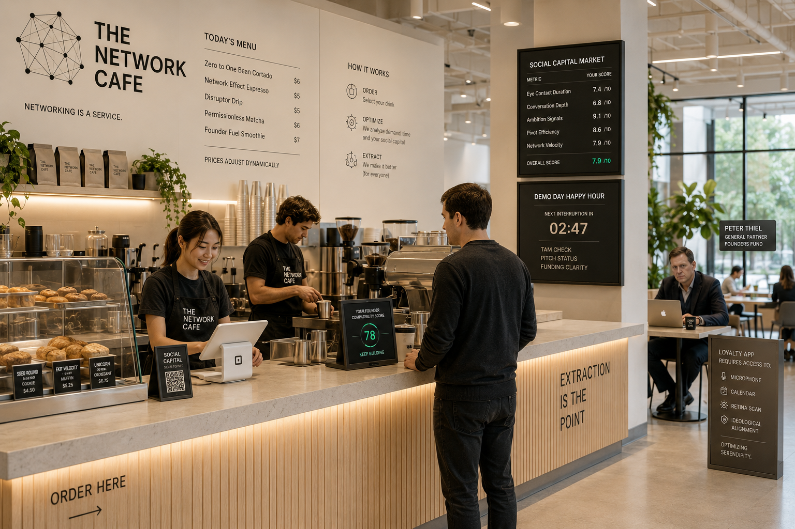
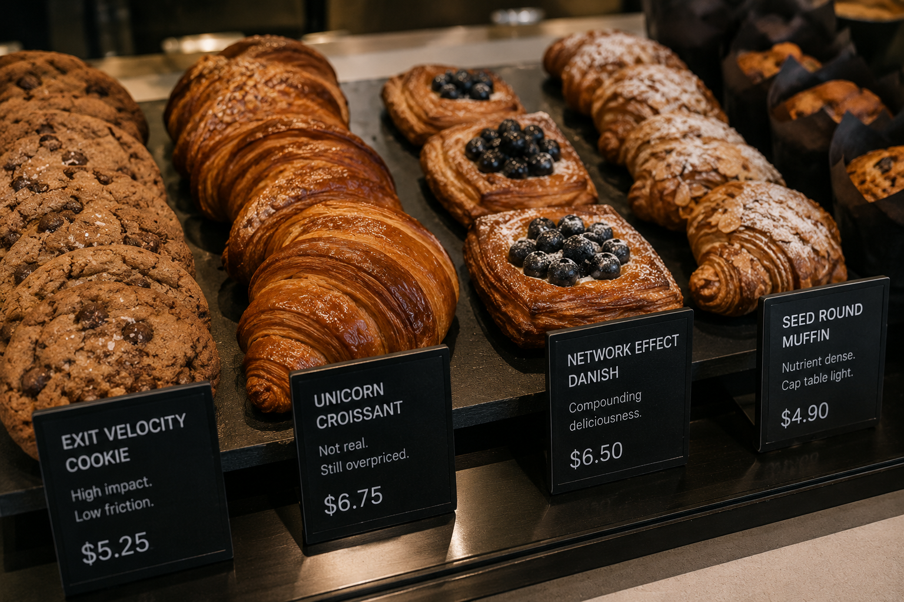
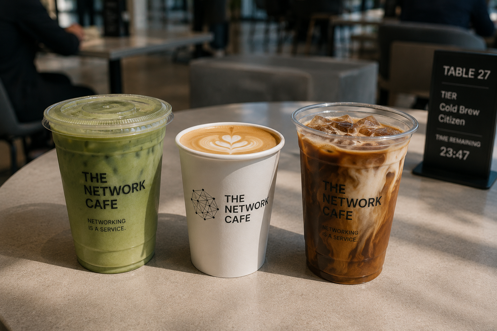

New Peter Thiel Backed Cafe in Palo Alto aims to Reinvent Networking
Billionaire investor Peter Thiel announced today the launch of The Network State Cafe, a members-only coffee concept aiming to “reinvent networking for the post-community era.” Located somewhere between a venture fund and a panic attack, the cafe charges customers dynamically based on “social capital metrics,” with seating tiers ranging from Cold Brew Citizen to Sovereign Founder Elite. The cafe’s core innovation is simple: every coffee chat is monitored, transcribed, sentiment-analyzed, and quietly fed into Palantir’s data infrastructure.
“Historically, cafes have suffered from a lack of extraction,” Thiel explained while sipping a $31 single-origin cortado named Zero to One Bean. “People were networking for free.” Unlike traditional cafes, The Network State Cafe monetizes: table time, eye contact, successful pivots, and phrases like “we should jam sometime.”

According to internal documents, customers receive a “Founder Compatibility Score” after each interaction. Users who fail to demonstrate sufficient ambition are automatically downgraded to outdoor seating near the compost bins. The cafe also features: AI-generated icebreaker questions projected onto tables, soundproof “Seed Round Booths,” and a Demo Day Happy Hour where baristas interrupt conversations every 7 minutes to ask about TAM. One early customer described the experience as “LinkedIn if it physically trapped you.” Another said the cafe’s matcha tasted “surprisingly good considering the constitutional implications.” Privacy advocates raised concerns after discovering the loyalty app requests: microphone access, calendar sync, retina scans, and “general ideological alignment.”
In response, Thiel reassured users that the data collection is “strictly for optimizing serendipity.” At press time, Andreessen Horowitz had already invested $240 million into a competing cafe startup where customers pay monthly to feel vaguely important inside a brutalist room with no outlets.

We ordered the flagship Founder Grade Ceremonial Matcha, a luminous green liquid served in a handmade cup that the waiter described as “post-national.” At $24 before seating fees, the matcha arrives with tasting notes of “Kyoto moss, whitepaper PDF, and light authoritarianism.” Flavor-wise, it’s admittedly excellent for the first three sips — smooth, earthy, slightly sweet — before developing the distinct aftertaste of your data being sold to defense contractors. The strawberry cloud foam tasted less like fruit and more like venture debt, while the pastries appeared engineered specifically for people who say things like “I’m optimizing my inflammation.” Still, we have to admit: among all the surveillance infrastructure and techno-libertarian ambiance, this may unfortunately be one of the better matchas in Palo Alto.
